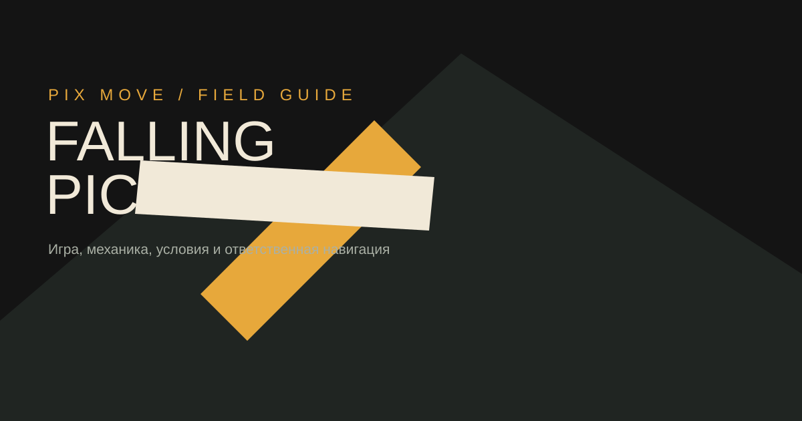
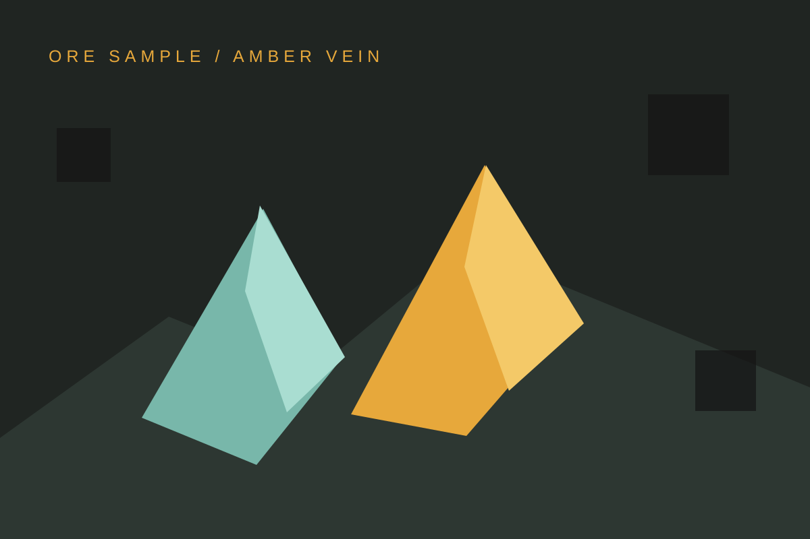

Механика в фокусе
Разберите интерфейс, возможные режимы и таблицу выплат до того, как принимать решение.
Изучить игру →PIXMove / FIELD GUIDE 01
Шахтёрская механика, которую стоит сначала понять. Falling Pickaxe — самостоятельная игра от PixMove о падающем инструменте, глубине и решениях без лишнего шума.

КАРТА СОДЕРЖАНИЯ
Falling Pickaxe — это короткие игровые решения внутри выразительного шахтёрского мира: падающий инструмент, блоки породы, найденная руда и ясный следующий шаг. Вы сразу понимаете, где начать, что проверить и куда перейти.
Вместо рекламного шума: одна страница про механику, отдельный разбор демо и понятная навигация по бонусам, промокодам и фриспинам.
Перейти к игреРазберите интерфейс, возможные режимы и таблицу выплат до того, как принимать решение.
Изучить игру →Демо помогает освоиться, но не переносит результаты в игру на деньги.
О демо →RTP, волатильность, wagering и лимиты должны быть видны до ставки.
Как играть →
ПЕРЕД НАЖАТИЕМ
Азартные игры связаны с финансовым риском. Доступность, бонусы и правила могут отличаться в зависимости от казино и региона.
Начать игруFalling Pickaxe — игра от PixMove с шахтёрской тематикой и механикой падающего инструмента. Точные правила и доступность зависят от площадки.
Демо может быть доступно у выбранного казино. Оно предназначено для знакомства с интерфейсом и не гарантирует результат при игре на деньги.
Ищите эти параметры в правилах игры, справке казино или таблице выплат. Если данных нет, уточните их у площадки до ставки.
Условия бонусов зависят от казино, региона и типа аккаунта. Читайте полный текст акции, включая wagering, срок и ограничения.
Предложение без депозита может отсутствовать или меняться. Не путайте его с демо и проверяйте требования по верификации и отыгрышу.
NEXT / SITE